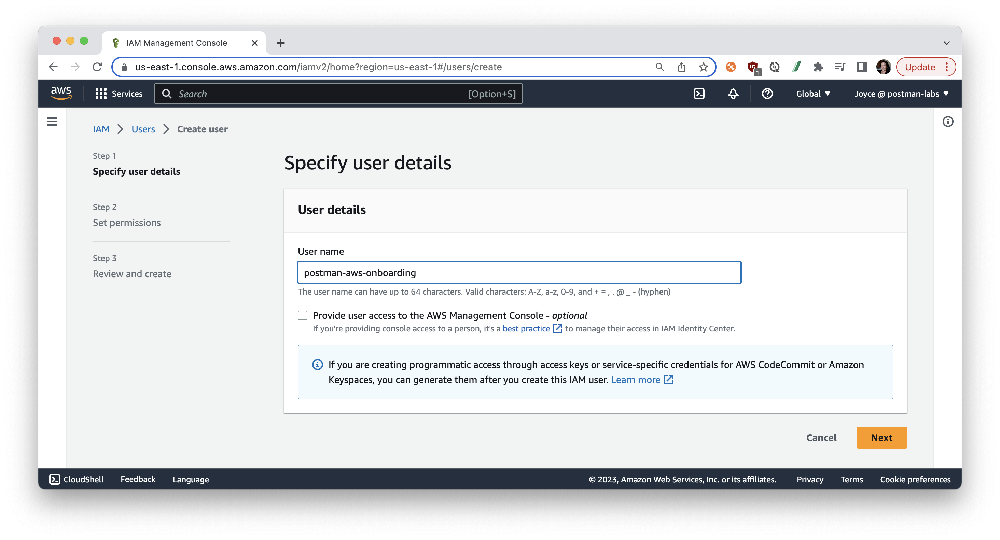
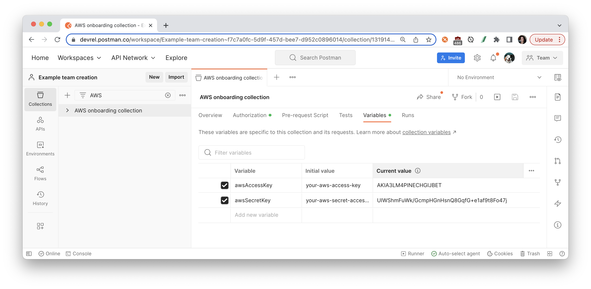
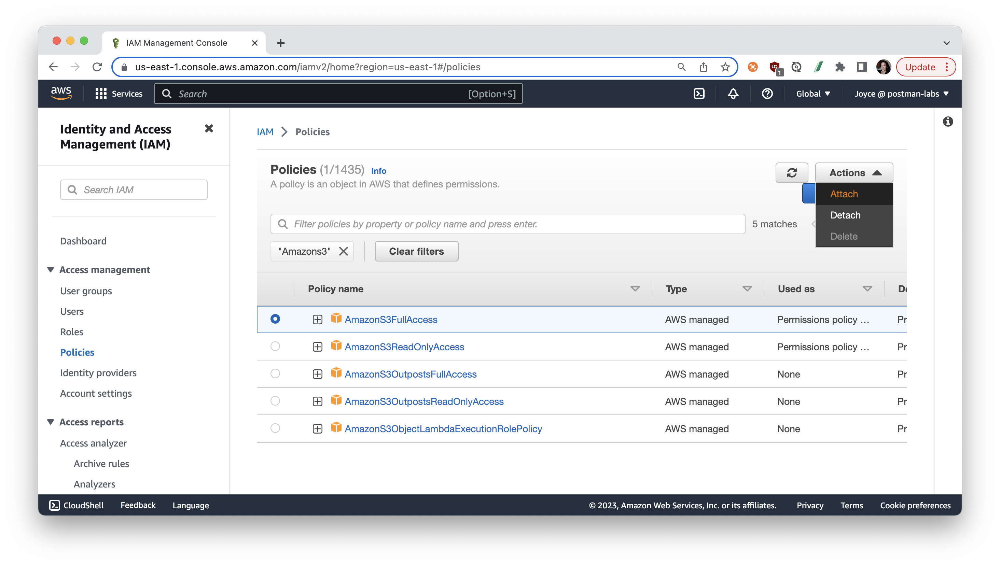
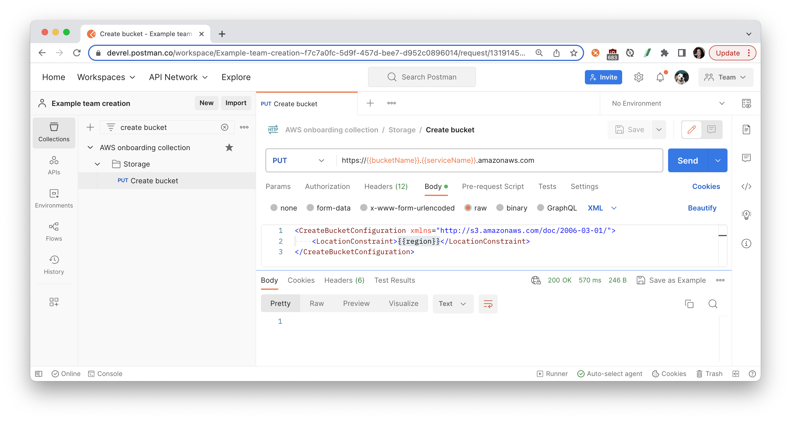
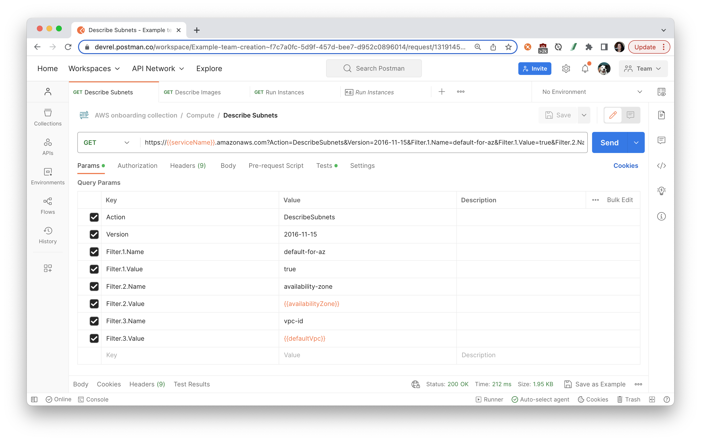
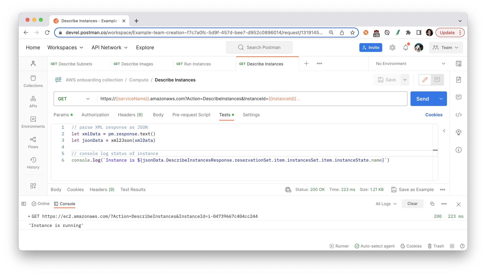

Learn how to get started with Amazon Web Services (AWS) APIs in Postman. If you are using AWS APIs for the first time, you can follow the steps in this guide to call the APIs using requests sent through the Postman client. You can use these requests to experiment with an API before you develop your application, or programmatically run a sequence of API calls to create and manage your infrastructure on AWS.
Prerequisites
- Basic familiarity with APIs and XML
What You'll Learn
- how to authenticate to AWS APIs
- how to set up Cloud instances and Cloud storage
- how to troubleshoot unexpected API behavior
- how to set permissions on AWS users
- how to grant access to Cloud resources
- how to automate API workflows for AWS in Postman
What You'll Need
- an AWS Account
- Make sure that the account that you use to sign in to the AWS Management Console can create a new IAM user, and new IAM policies and roles.
- a Postman Account
What You'll Build
- A Postman Collection with authorized API requests.
- Code samples to integrate into your own workflows and applications.
- API workflows to automate the setup of your infrastructure
Create a new administrative user in AWS
IAM (Identity and Access Management) enables you to manage users and user permissions in AWS. You can create multiple IAM users with different roles and permissions as an added layer of security for your AWS account. In this tutorial we will create an IAM user to enable programmatic access to the AWS APIs.
- From the AWS console, create a new User on your AWS team. 
- You can optionally set permissions now following your team's procedures and preferences. Or in the subsequent steps, we will add permissions before working with each AWS service.
Input AWS data into Postman
- Click the orange Run in Postman button below to fork this example collection to your own Postman workspace.

- In the Postman app, enter a label for your fork and select the workspace to fork the collection:

- Select the Postman collection that you forked to your workspace. Find the Variables tab, and paste your new User's information into each variable value.
- awsAccountId - Your Account ID can be found in the upper right hand corner of the AWS console
- region - Your default AWS region can be found in the URL path when logged into the AWS console. For example,
us-east-1is the default region inhttps://us-east-1.console.aws.amazon.com/.
Authentication is a process of verifying the identity of the requester trying to access an Amazon Web Services (AWS) product. Authenticated requests must include a signature value that authenticates the request sender. The signature value is generated from the requester's AWS access keys that we will generate next.
Get AWS credentials from AWS console
- In the AWS IAM console, click Users in the Details pane, click the IAM user we created in the previous steps, and then click Create Access Key on the Security Credentials tab.

- Step through the configuration details, such as selecting the use case "Application running outside AWS". Generate your Access key and Secret access key, which we will need for the next step.

For more information about getting access keys, see the AWS General Reference.
Set AWS credentials in Postman
In Postman, we can use an authorization helper to compute an AWS signature to include with each request. To authenticate requests using AWS Signature Version 4, add your AWS credentials to Postman:
- In Postman, select the collection that you previously forked to your own workspace. Navigate to the Authorization tab, and select AWS Signature as the authorization type. We are setting up authorization for the collection, so that every request within this collection can inherit and use these authorization credentials.
- Scroll down to fill in the following details.
- AccessKey: This is the Access key from the AWS IAM console in the previous steps.
- SecretKey: This is the Secret access key from the AWS IAM console.

- Instead of pasting those values directly in the fields, we used double curly braces to reference a collection or environment variable to keep sensitive data secure. 
- Once all the data has been provided to the respective fields, Save your updates. Postman will add the required headers to every request within this collection.
In the following sections, let's explore some of the most popular APIs on Amazon Web Services.
What is IAM?
As previously mentioned, IAM (Identity and Access Management) enables you to manage users and user permissions in AWS as an added layer of security for your AWS account.
You manage access in AWS by creating policies and attaching them to IAM identities (users, groups of users, or roles) or AWS resources. A policy is an object in AWS that, when associated with an identity or resource, defines their permissions.
You can change the permissions for an IAM user in your AWS account by changing its group memberships, by copying permissions from an existing user, or by attaching policies directly to a user. You can do this from the IAM console in the AWS Management Console, the AWS Command Line Interface (AWS CLI), or the AWS API.
Let's attach an existing IAM policy using the IAM console.
Attach policy with console
In the next steps, we will work with an Amazon S3 cloud storage resource called a bucket. To grant the user permissions on a bucket, the AWS account can use a bucket policy, a user policy, or both. Let's attach an IAM policy to our new user.
- Open the IAM console in the AWS Management Console, and choose Policies. Search for
AmazonS3FullAccess. Click on the policy, toggle over to JSON, and review the details. TheAmazonS3FullAccessmanaged policy provides full access to all buckets.{ "Version": "2012-10-17", "Statement": [ { "Effect": "Allow", "Action": [ "s3:*", "s3-object-lambda:*" ], "Resource": "*" } ] } - Return to the previous page, once again search for
AmazonS3FullAccess, and select the radio button next to the name of the policy to attach. Choose Actions, and then choose Attach.  - Select the IAM user we created in the previous steps, and choose Attach policy.

Now that we've granted our new user access to all S3 buckets, let's create a new bucket.
What is Amazon S3?
Amazon Simple Storage Service (Amazon S3) is an object storage service that offers scalability, data availability, security, and performance. Customers can use Amazon S3 to store and protect data for a range of use cases, such as data lakes, websites, mobile applications, backup and restore, archive, enterprise applications, IoT devices, and big data analytics. You can optimize, organize, and configure access to your data to meet your specific requirements.
Get started with Amazon S3
To get started with Amazon S3 APIs, we will rely on the API reference as well as common error codes to help with troubleshooting.
- Set Permissions for User: In the previous step, we attached an IAM policy
AmazonS3FullAccessfor our new user to access all S3 buckets. If you haven't done this already, do it now from the IAM console. - Configure a bucket: 1. In your Postman workspace, select the collection that you previously forked, and expand the folder called "Storage". Open the "Create bucket" request, and review the following parts of the API request.
PUTmethod- Base URL includes two variables. Verify you have a collection or environment variable called
serviceNamewith a value ofs3, a variablebucketNamewith the preferred name for the bucket. - Request body includes an XML object containing a variable
{{region}}which is previously defined.
- Create a bucket: Then Send the request to create a new bucket. 
- List buckets: Open the "List buckets" request, and Send the request to inspect all the buckets. The response from the AWS API contains an XML object. Under the Tests tab of Postman, we can use a library called
xml2Jsonto parse the XML object and write a test to programmatically verify our new bucket exists.
- Upload object: Open the "Upload object to bucket" request, and configure the following details.
- Base URL includes a variable called
fileName. Under the Pre-request Scripts tab, we have a line of code to programmatically generate a random word to use as your file name. Postman will generate this random word when the request is run. If you want to manually set the name of your object, comment out this line of code (by inserting//at the beginning of the line), and then add a collection or environment variable calledfileName. - Under the request body, select Binary and then select a file to upload. Once you add a file, notice Postman automatically updates the
Content-typeheader under the Headers tab. - Send the request.

- Base URL includes a variable called
- Get object: Open the "Get object from bucket" request, and Send the request. Notice we are using the same
fileNamefrom the previous request.
- Make objects public: Open the "Set bucket policy", and Send the request. Notice we are using the same
{{bucketName}}defined previously. Depending on your settings, you may need to go to the S3 console, and navigate to your bucket to uncheck "Block all public access" in order to update the bucket policy.
Other related topics:
What is Amazon EC2?
Amazon Elastic Compute Cloud (Amazon EC2) provides scalable computing capacity in the Amazon Web Services (AWS) Cloud. Using Amazon EC2 eliminates your need to invest in hardware up front, so you can develop and deploy applications faster. You can use Amazon EC2 to launch as many or as few virtual servers as you need, configure security and networking, and manage storage. Amazon EC2 enables you to scale up or down to handle changes in requirements or spikes in popularity, reducing your need to forecast traffic.
In this section, you'll learn how to launch, connect to, and use a virtual server in the AWS cloud called an instance.
Get started with Amazon EC2
To get started with Amazon S3 APIs, we will rely on the API reference as well as common error codes to help with troubleshooting. Additionally, we will rely on this guide.
- Set Permissions for User: Follow the same process in the IAM console to attach an IAM policy
AmazonEC2FullAccessto our new user and provide full access to Amazon EC2. - Describe availability zones: In your Postman workspace, select the collection that you previously forked, and expand the folder called "Compute". Open the "Describe Availability Zones" request, and review the following parts of the API request.
GETmethod- Base URL includes a variable
serviceNameto be defined asec2in the folder's pre-request script when the request is sent. To see these details, select the folderComputeand then the Pre-request Scripts tab. - Request parameters include a variable
Actionwith a valueDescribeAvailabilityZones

- Describe VPCs: Open the "Describe VPCs" request, and review differences in this API request compared to the previous request.
- Request parameters include a variable
Actionwith a valueDescribeVpcs, and also filters to return only the default VPC.
- Request parameters include a variable
- Describe Key Pairs: Open the "Describe Key Pairs" request, review and Send this request, and notice the code to set a collection variable with the key pair name.

- Describe Subnets: Open the "Describe Subnets" request, and Send the request. Notice this request includes filters to find the default subnet given the VPC and availability zone determined in the previous requests. 
- Describe Images: Open the "Describe Images" request. You can add other filter parameters to narrow down the list of results. Send the request.

- Run Instances: It is finally time to launch an instance. Open the "Run Instances" request, and see the query parameters utilize the data collected in the preceding requests.

- Describe Instances: Open the "Describe Instances" request which utilizes the instance ID set in the preceding request. This time, let's log the instance state to the Postman console. 
Organize workflows in Postman
Once you explore an API, you understand the basic building blocks of popular services on AWS. Next, organize your work into your own collections and workspaces in Postman.
- Create your own collections of API calls for automating deployments and monitoring infrastructure.
- Create your own workspaces to organize work for an API or collaborate with team members.
Automate workflows in Postman
Once you group API requests into collections, there are multiple ways to programmatically run those collections.
- Add tests and scripts to dynamically pass information from one request to another
- Utilize inbuilt Postman integrations, such as deploying to AWS Gateway
- Run collections on a scheduled frequency on Postman servers, as part of your CI/CD pipeline, or via webhooks
Build your own applications
Once you have an API call working the way you want it to in Postman, generate client code to paste into your own applications. 
What we've covered
- how to authenticate to AWS APIs
- how to set up Cloud instances and Cloud storage
- how to troubleshoot unexpected API behavior
- how to set permissions on AWS users
- how to grant access to Cloud resources
- how to automate API workflows for AWS in Postman
For more hands-on tutorials, check out these resources.
- Check back for more AWS tutorials
- Contribute your own tutorials here
Other topics
- Other AWS integrations from Codebase, a UC Berkeley student organization that builds software projects for high growth tech companies.
- AWS Cloudwatch
- AWS CodeCommit
- AWS API Gateway
- AWS Cognito
- AWS S3
- AWS API Gateway: Postman integration for deployments